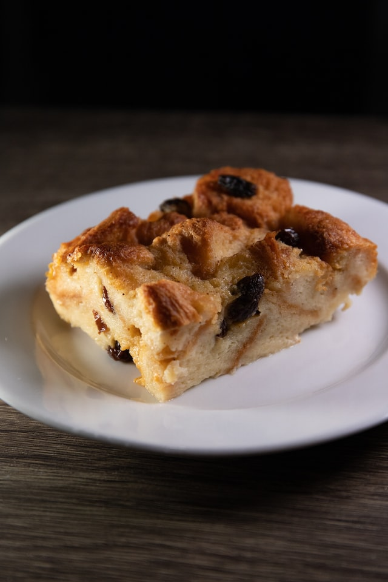

Bread Pudding

Description
This recipe is proof-positive that leftover bread can easily be converted to dessert without much work.
There’s room for customization here: consider adding fresh or dried fruit or a combination of spices like cinnamon,
nutmeg, allspice and cardamom.
It makes a great brunch dish, served with fresh fruit compote. Or add a handful of chocolate chips before baking
for a decidedly more decadent outcome.
Ingredients
- 2 cups milk
- 2 tablespoons (¼ stick) unsalted butter, more for greasing pan
- 1 teaspoon vanilla extract
- 1 teaspoon vanilla extract
- 1/3 cup sugar
- Pinch salt
- 1/2 loaf sweet egg bread like challah or brioche, cut into 2-inch cubes (about 5 to 6 cups)
- 2 eggs, beaten
Directions
- Heat oven to 350 degrees. In a small saucepan over low heat, warm milk, butter, vanilla, sugar and salt.
Continue cooking just until butter melts; cool. Meanwhile, butter a 4-to-6-cup baking dish and fill it with cubed
bread.
- Add eggs to cooled milk mixture and whisk; pour mixture over bread. Bake for 30 to 45 minutes, or until custard
is set but still a little wobbly and edges of bread have browned. Serve warm or at room temperature.